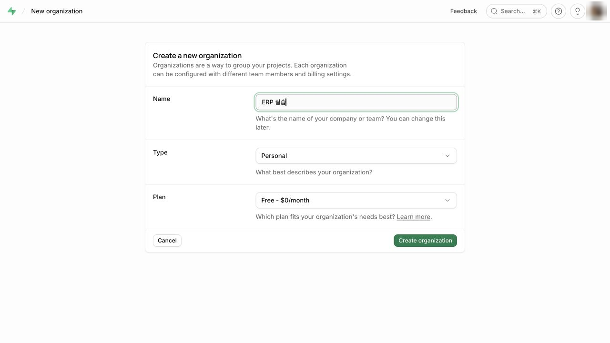
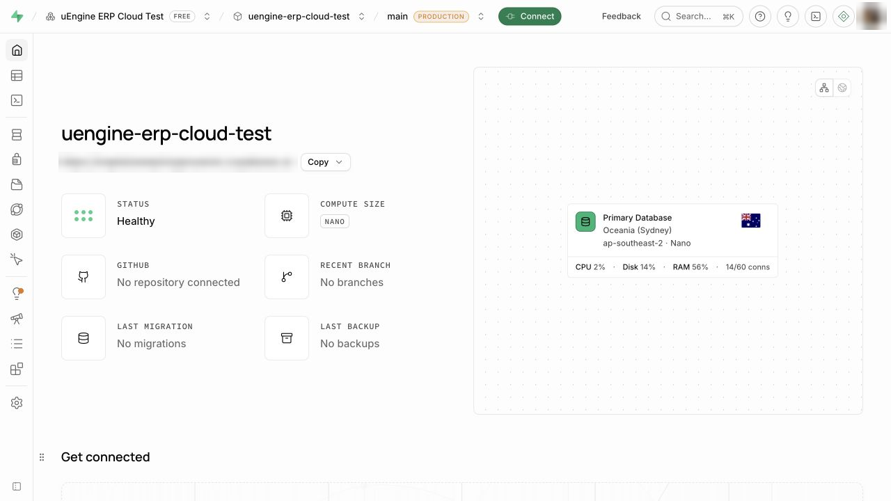
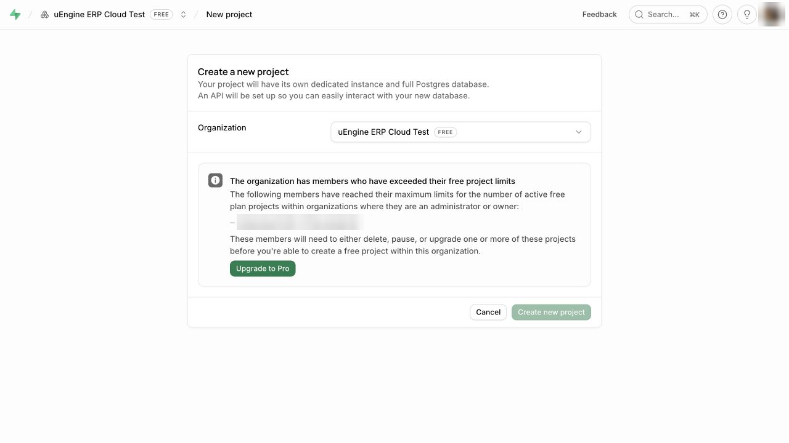
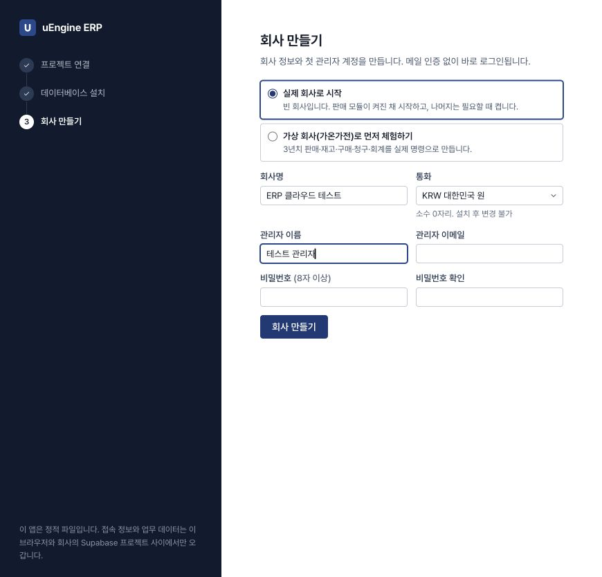
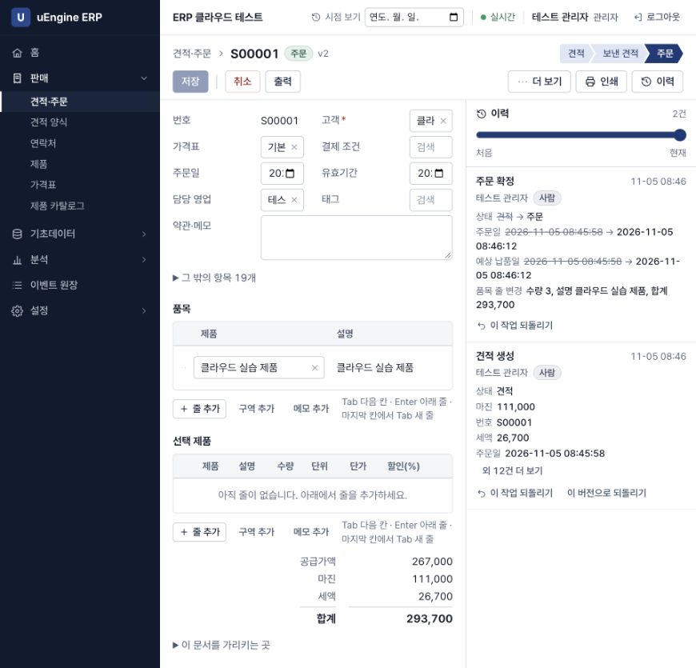
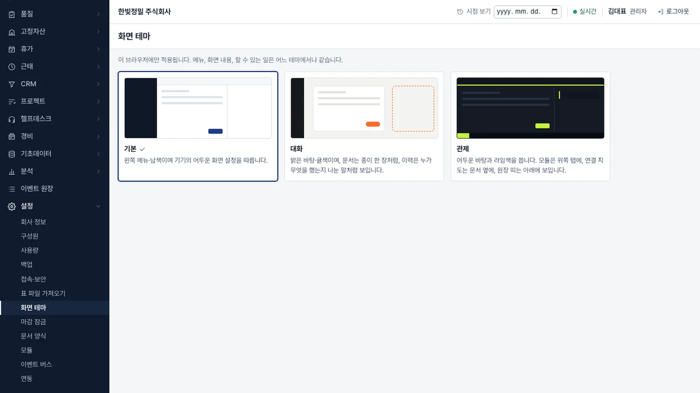
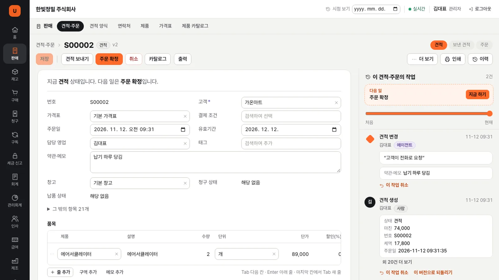
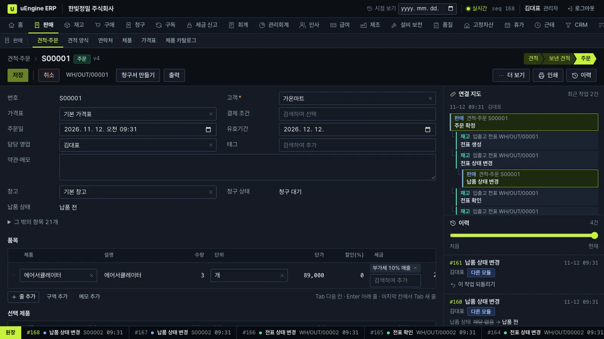

빈 Supabase 프로젝트에 uEngine ERP를 설치하고, 판매 모듈 하나로 거래처와 제품, 견적, 주문까지 만듭니다.
무엇을 · 왜#
uEngine ERP는 판매 모듈 하나로 시작해 회사가 성장하는 만큼 재고·구매·청구·회계 모듈을 더하는 ERP입니다. 앱은 정적 파일이고, 데이터와 업무 규칙은 내 Supabase 프로젝트의 Postgres 안에 있습니다. 따라서 사용자와 제공자 모두 서버를 따로 운영하지 않습니다.
| 모듈 | 하는 일 | 켜면 사용할 수 있는 예측·what-if |
|---|---|---|
| 판매 | 거래처, 제품, 가격표, 견적, 주문 | 지역·제품·시즌 통계, 수요 예측, 단종(범위) |
| 재고 | 창고, 입출고, 재고 조정, 재주문 규칙 | 품절 예상일, 발주 정책 변경, 창고 재배치, 단종(대체율 추정) |
| 구매 | 견적 요청, 구매 주문, 입고 | 실측 납기, 발주 필요 예측, 납기·공급사 변경 |
| 청구 | 청구서, 대변 메모, 입금 | 입금 예측, 결제 조건 변경 |
| 회계 | 분개, 시산표, 손익, 재무상태 | 손익 전망 |
먼저 알아 둘 것
- 가온가전은 가상 회사입니다. 이 튜토리얼의 수치는 모두 가상 회사의 것이고, 실제 고객이나 실제 성능을 나타내지 않습니다.
- 이 튜토리얼의 화면은 내 컴퓨터의 로컬 Supabase에서 찍었습니다. 그래서 주소가
http://127.0.0.1:56321로 보입니다. 클라우드에서는 2026년 11월 5일 별도로 가입·프로젝트 생성·분할 SQL 설치·회사 생성·거래처와 제품 저장·주문 확정·새로고침 후 재조회를 확인했습니다. 클라우드에서 확인한 화면과 설치 제한은 아래에 따로 적었습니다. - 무료 플랜에서의 속도는 측정하지 않았습니다. 앱이 보여 주는 무료 플랜 안내는 데이터베이스 500 MB, 자동 백업 없음, 7일 동안 활동이 없으면 일시 중지입니다.
- 서버가 필요한 기능도 있습니다. 메일 발송, 결제, 전자세금계산서, 은행 연동은 포함하지 않습니다. 필요하면 내 프로젝트의 Edge Function으로 연동합니다.
이 튜토리얼의 장은 이렇게 이어집니다.
| 장 | 내용 |
|---|---|
| 설치하고 판매로 시작하기 | Docker 설치판 또는 클라우드(접속 정보, 설치 SQL), 회사 만들기, 첫 주문, 화면 테마 (이 장) |
| 재고를 켜고, 고장 나도 판매는 계속 | 모듈 켜기, 이벤트로 이어지는 출고, 구독 고장과 복구 |
| 구매·청구·회계 켜기 | 재주문 규칙에서 입고까지, 청구서에서 시산표까지 |
| 과거 시점 보기와 되돌리기 | 이력 슬라이더, 회사 전체 시점 보기, 모듈을 넘는 되돌리기 |
| 예측과 what-if | 모델의 세 상태, 수요 예측, 다섯 가지 what-if |
| 플러그인과 REST·MCP 연동 | SQL 파일 하나로 설치하는 플러그인, 연동 키, 외부 호출 |
1장부터 3장까지는 같은 회사를 이어서 씁니다. 4장부터는 3년치 기록이 있는 가상 회사를 씁니다.
따라 하기#
설치 방법은 두 가지입니다. 여러 사람이 어디서나 쓰려면 아래 1~4번의 클라우드 방식(Supabase 무료 프로젝트)을 따르세요. 혼자 내 컴퓨터에서 먼저 써 보려면 바로 아래 Docker 설치판이 가장 빠릅니다.
Docker 설치판: 가입 없이 내 컴퓨터에서#
Supabase가 포함된 묶음을 내려받아 명령 하나로 시작하세요. 데이터베이스는 자동으로 설치됩니다. 브라우저를 열면 연결 화면 없이 바로 회사 만들기가 나옵니다.
curl -LO https://uengine-oss.github.io/uengine-erp/uengine-erp-docker.zip
unzip uengine-erp-docker.zip
cd uengine-erp-docker-*
./install.sh
처음에는 이미지를 받는 데 몇 분 걸립니다. 준비됐습니다와 함께 주소가 나오면 http://127.0.0.1:57300을 여세요. 이후 과정은 아래 4번의 회사 만들기부터 동일합니다.
- 필요한 것: Docker Desktop이나 colima(Docker 메모리 4 GB 이상), 빈 디스크 공간 10 GB가 필요합니다. 처음에 이미지 약 1.5 GB를 받습니다. Windows에서는 WSL2 터미널 안에서 실행하세요. colima에서는 홈 폴더 아래에 압축을 푸세요.
- 접속 범위: 이 컴퓨터(127.0.0.1)에서만 열립니다. 같은 네트워크의 다른 컴퓨터에서는 접속할 수 없습니다.
- 빠진 기능: 경비 영수증 첨부(Storage)와 메일 발송 기능은 포함되지 않습니다. 직원 계정은 관리자가 설정 → 구성원에서 만듭니다.
- 관리 명령:
./install.sh stop(멈춤),status(상태),backup(백업),upgrade(백업 후 새 설치 SQL 실행),reset(데이터 모두 지움, 한 번 더 묻습니다). - 새 버전: 내려받기 주소는 앱을 배포할 때마다 새 묶음으로 바뀝니다. 새로 내려받아 같은 폴더에 덮어 풀고
./install.sh upgrade를 실행하세요. 데이터베이스 비밀번호와 키가 든.env는 압축에 포함되지 않아 그대로 남습니다.
자세한 내용은 Docker 설치판 설명서에 있습니다.
확인한 범위
2026년 11월 5일 Apple Silicon Mac의 colima에서 압축 풀기부터 설치, 회사 만들기, 로그인, 거래처·제품·주문 저장, 새로고침 후 재조회, 재고 모듈을 켠 뒤 출고 생성, 업그레이드, 초기화 후 재설치까지 확인했습니다. 설치는 이미지를 미리 받아 둔 상태에서 약 1분 40초 걸렸습니다. Intel·AMD PC와 Windows에서는 아직 실행해 보지 않았습니다.
클라우드 방식: Supabase 무료 프로젝트#
처음 설치할 때는 Supabase 대시보드와 ERP 앱을 각각 탭으로 열어 두세요. Supabase에는 데이터베이스를 만들고, ERP 앱에는 연결 정보를 넣습니다.
1. Supabase 가입과 무료 조직 만들기#
- Supabase 대시보드에 접속합니다. 계정이 없으면 Sign up, 계정이 있으면 Sign in을 선택합니다.
- GitHub 등 화면에 표시된 로그인 방법을 선택하거나 이메일로 가입합니다. 이메일 가입은 안내에 따라 인증을 마칩니다. 가입 시 표시되는 약관을 확인하세요.
- Create a new organization이 나오면 Name에 팀 이름(예:
ERP 실습)을 넣습니다. 개인 실습은 Type: Personal, Plan: Free - $0/month를 선택하고 Create organization을 누릅니다. 기존 조직이 있다면 그 조직에서 새 프로젝트를 만들 수 있습니다.

위 화면은 로그인 후 조직을 등록하는 실제 화면입니다. 계정 가입 화면과는 다릅니다. 캡처를 위해 예시 이름만 입력했으며 새 조직을 추가로 만들지는 않았습니다.
2. 빈 프로젝트 만들기#
- New project에서 사용할 조직을 확인합니다. Project name은 예를 들어
erp-practice로 정합니다. - Database password에 강한 비밀번호를 지정합니다. Generate a password를 사용할 수도 있습니다. 강도가 부족하다는 메시지가 나오면 수정합니다. 이 비밀번호는 안전한 비밀번호 관리 도구에 보관하세요.
- Region은 사용할 지역에 맞게 선택합니다. 특정 지역이 필요하면 Need a specific region?을 엽니다. Auto를 쓰는 경우 실제 배치 지역을 생성 후 확인하세요.
- Enable Data API는 켜 둡니다. ERP는 이 API로 연결합니다. GitHub 저장소 연결은 필수가 아닙니다. 나머지 보안 설정은 아래 안내를 읽고 선택하세요.
- Create new project를 누르고 프로젝트 준비가 끝날 때까지 기다립니다. 생성 양식이 사라지고 프로젝트 대시보드가 열렸는지 확인합니다. 비밀번호를 복사한 것만으로 프로젝트가 생성되지는 않습니다.
보안 설정과 빈 프로젝트
ERP는 설치 SQL에서 자체 스키마와 공개 API, 접근 권한을 구성합니다. 기존 업무 데이터가 없는 별도 프로젝트를 사용하세요. Automatically expose new tables는 새 표의 기본 API 권한에 관한 설정이며 ERP 설치 완료를 뜻하지 않습니다. ERP를 위해 기존 프로젝트의 RLS를 끄거나 내부 erp 스키마를 노출할 필요는 없습니다. 클라우드의 새 프로젝트 설정 조합은 아직 끝까지 검증하지 않았습니다.

생성 버튼을 누른 뒤 위와 같은 프로젝트 대시보드가 열리는지 확인하세요. 이 실습의 Auto 지역은 Sydney로 배치됐습니다. 한국 지역을 원하면 생성 전에 특정 지역을 선택해야 합니다.
새 프로젝트 입력란 대신 무료 프로젝트 한도 안내가 나오나요?

이 캡처에서는 조직의 관리자·소유자가 활성 무료 프로젝트 한도에 도달해 입력란과 생성 버튼이 제한됐습니다. 새 조직을 만드는 것만으로 계정의 한도가 늘지는 않습니다. 기존 프로젝트의 사용 여부와 Supabase 요금제 안내를 확인하세요. 이 안내를 촬영하면서 기존 프로젝트를 중지·삭제하거나 유료 전환하지 않았습니다.
3. Project URL과 공개 키 찾기#
프로젝트 위쪽의 Connect에서 Project URL과 Publishable key를 찾습니다. 키 목록은 Settings → API Keys에서도 확인할 수 있습니다. 대시보드 개편으로 위치가 다르면 프로젝트의 연결 안내에서 같은 이름을 찾으세요.
| 값 | 모양 / 용도 | ERP에 입력하나요? |
|---|---|---|
| Project URL | https://프로젝트ID.supabase.co |
예 |
| Publishable key | sb_publishable_…로 시작하는 공개 키 |
예 |
| Database password | 프로젝트를 만들 때 정한 Postgres 비밀번호 | 아니요 |
| Secret key / service_role | 서버 관리자 권한을 가진 비밀 키 | 아니요 |
| 관리자 이메일·비밀번호 | 뒤의 회사 만들기에서 정할 ERP 로그인 계정 | 회사 만들기 단계에서 입력 |
URL과 공개 키는 같은 프로젝트에서 복사합니다. 대시보드 주소(supabase.com/dashboard/…)나 데이터베이스 접속 문자열을 Project URL에 넣지 마세요.
왜 최초 SQL은 Supabase에서 실행하나요?#
현재 ERP 앱이 받는 Publishable 키에는 데이터베이스 구조를 만드는 관리자 권한이 없습니다. 그래서 연결과 회사 만들기는 ERP 앱에서, 최초 SQL 설치는 Supabase SQL Editor에서 진행합니다. 최초 설치가 끝난 뒤 일상 업무마다 SQL Editor를 열 필요는 없습니다. 앱의 업그레이드가 필요할 때는 해당 버전의 안내를 따릅니다.
클라우드 SQL Editor 크기 제한 확인
2026년 11월 5일 실제 무료 프로젝트에서 현재 앱의 설치 SQL(화면 표시 1561 KB)을 실행했지만, Query is too large to be run via the SQL Editor 오류로 거부되었습니다. 현재 버전은 전체 SQL을 한 번 붙여 넣는 안내만으로 설치가 끝나지 않습니다. 임의의 줄에서 나누면 함수나 트랜잭션이 끊기거나 최종 권한 설정이 빠질 수 있으므로 직접 잘라 실행하지 마세요. 모듈 경계별로 5개 단위로 나누고, 중간 단계의 공개 API 권한을 닫은 뒤 마지막 단계에서 정식 권한과 설치 코드를 적용하자 설치가 완료됐습니다. 다만 현재 공개 앱은 자동 분할 기능을 제공하지 않으므로 일반 사용자가 아래의 전체 SQL 복사만으로 클라우드 설치를 끝낼 수 있다고 안내하지 않습니다. 분할 설치를 제품에서 지원하기 전에는 도입 담당자와 진행하세요.
4. ERP 연결 → SQL 설치 → 회사 만들기#
ERP 앱 열기를 누르고 아래 화면 순서대로 진행하세요. 이후 그림은 로컬 Supabase에서 촬영한 것으로 클라우드 설치 성공 화면은 아닙니다. SQL 크기와 화면 문구는 앱 버전에 따라 달라질 수 있습니다.
- 접속 정보 넣기. 앱을 처음 열면 Supabase 프로젝트 연결 화면이 나옵니다. Project URL과 Publishable 키 (공개 키)를 넣습니다.

프로젝트 연결 - 비밀 키는 넣지 않습니다.
sb_secret_으로 시작하는 키를 넣으면 앱이 네트워크로 보내지도, 저장하지도 않고 바로 거부합니다. 공개 키를 넣고 다음을 누릅니다.
비밀 키 거부 - 설치 SQL을 차례로 복사. 공개 키로는 표를 만들 수 없어서 SQL을 직접 실행합니다. Supabase SQL Editor는 한 번에 실행할 수 있는 크기가 정해져 있습니다. 앱은 이 제한에 맞춰 설치 SQL을 모듈별로 여섯 부분으로 나눠 줍니다. 1 기본(판매), 2 재고·구매, 3 청구·회계, 4 자산·세금·인사·급여, 5 경비·CRM·프로젝트·제조·보전·품질·헬프데스크, 6 장부·분석·연동 순서입니다. 1번부터 차례로 단추를 누르면 해당 부분이 복사됩니다. 마지막 부분에는 이번 설치에만 쓰는 코드가 들어 있습니다.

데이터베이스 설치 - SQL Editor에서 실행. 이 프로젝트의 SQL Editor 열기를 눌러 복사한 부분을 붙여 넣고 Run을 누릅니다. 실행이 끝나면 앱의 해당 단추에 체크가 표시되고 다음 단추가 강조됩니다. 여섯 부분을 모두 실행하면 앱이 자동으로 회사 만들기로 넘어갑니다. 같은 부분을 다시 실행해도 데이터는 지워지지 않습니다. psql이나 Supabase CLI처럼 크기 제한이 없는 곳에서는 한 번에 설치하기의 전체 SQL을 써도 됩니다.
!!! note "클라우드에서 확인한 것"
2026년 11월 5일 실제 무료 클라우드 프로젝트에서 전체 SQL(약 1.6 MB)을 한 번에 붙여 넣었지만
Query is too large to be run via the SQL Editor오류로 실행되지 않았습니다. 같은 날 모듈 경계로 나눈 다섯 부분을 차례로 실행해 회사 만들기와 첫 주문까지 확인했습니다. 앱이 주는 여섯 부분도 같은 방식으로 나눴습니다. 로컬 시험에서는 빈 데이터베이스에 차례로 실행해 전체 SQL과 같은 표와 함수가 만들어지는 것을 확인했습니다. 여섯 부분을 클라우드에서 다시 실행해 보지는 않았습니다. 영상은 로컬 Supabase에서 여섯 부분을 차례로 실행하며 찍었습니다. - 회사 만들기. 실제 회사로 시작을 고릅니다. 판매 모듈이 켜진 빈 회사가 됩니다. 회사명(
가온가전), 통화(KRW), 관리자 이름(김대표), 관리자 이메일, 비밀번호를 넣고 회사 만들기를 누르면 메일 인증 없이 바로 로그인됩니다. 통화의 소수 자릿수는 설치 후 바꿀 수 없습니다. 가상 회사(가온가전)로 먼저 체험하기를 고르면 3년치 판매·재고·구매·청구·회계 기록을 실제 명령으로 만듭니다. 데이터베이스 공간을 약 250 MB 사용하며, 생성에는 몇 분 걸립니다. 4장부터 쓰는 회사가 이것입니다. 지어낸 데이터이므로 실제 업무는 새 프로젝트로 시작하세요.
회사 만들기 - 모듈 화면 보기. 설정 → 모듈을 엽니다. 판매만 켜짐이고 재고, 구매, 청구, 회계는 꺼짐입니다. 카드마다 무엇을 다루는지, 켜면 무엇이 열리는지 적혀 있습니다.

모듈 화면 - 메뉴 보기. 왼쪽 메뉴에 재고·구매·청구·회계가 없습니다. 판매를 펼치면 견적·주문, 견적 양식, 연락처, 제품, 가격표, 제품 카탈로그가 보입니다.

판매 메뉴 - 거래처 만들기. 연락처 → 새로 만들기에서 구분을 회사로, 이름을
가온마트, 지역을수도권으로 넣고 저장을 누릅니다.
거래처 - 제품 만들기. 제품 → 새로 만들기에서 제품명
에어서큘레이터, 판매가89000, 원가52000을 넣고 저장을 누릅니다.
제품 - 영업 담당자 추가. 설정 → 구성원 → 직원 추가에서 이름
박영업, 이메일, 초기 비밀번호(8자 이상)를 넣고 역할에서 영업을 켜고 조회를 끕니다. 메일을 보내지 않고 관리자가 계정을 만듭니다. 만든 뒤 로그아웃하고 그 계정으로 로그인합니다.
구성원 - 견적 만들기. 견적·주문 → 새로 만들기에서 고객
가온마트를 고르고, 줄 추가로에어서큘레이터를 고른 뒤 수량을3으로 입력합니다. 가격과 세금은 서버가 계산합니다. 공급가액 267,000, 세액 26,700, 합계 293,700이 됩니다.
견적 - 보내고 확정하기. 저장을 누르면 번호(
S00001)가 붙습니다. 견적 보내기를 누른 뒤 주문 확정을 누릅니다. 위쪽 단계 표시가 견적, 보낸 견적, 주문으로 옮겨 갑니다. 재고와 청구 모듈이 꺼져 있으니 납품 상태와 청구 상태 칸은 화면에 없습니다.
주문 확정 - 분석 화면 보기. 분석 → 예측·what-if를 엽니다. 모델은 세 상태 중 하나입니다. 지역·제품·시즌 통계는 사용 가능, 판매 기준 수요 예측은 근거 부족(
판매 15개월 필요 (지금 1개월)), 품절 보정 수요 예측은 잠김(재고 모듈을 켜면 열립니다)입니다.
분석 화면
실제 클라우드에서 확인한 설치 완료 화면#
아래는 2026년 11월 5일 무료 클라우드 프로젝트에서 분할 SQL 설치를 마친 뒤 앱이 자동으로 표시한 화면입니다. 프로젝트 연결과 데이터베이스 설치에 체크가 표시되고 회사 만들기가 열렸습니다. 회사 생성이나 업무 데이터 저장 완료를 뜻하는 화면은 아닙니다.

5. 설치가 끝났는지 확인하기#
- 회사 만들기 화면까지 자동으로 넘어왔는지 확인합니다. SQL Editor의 실행 완료와 ERP의 설치 감지를 모두 확인하세요.
- 빈 실습 회사에서 거래처와 제품을 각각 하나 만들고 견적을 저장합니다. 실제 고객 정보 대신 가상 이름을 쓰세요.
- 화면을 새로고침하고 저장한 거래처·제품·견적이 남아 있는지 확인합니다. 다시 로그인한 뒤에도 보이는지 확인하면 저장과 조회를 함께 점검할 수 있습니다.
- Supabase 로그인 계정, 데이터베이스 비밀번호, ERP 관리자 계정은 서로 다릅니다. 다음 접속에는 같은 ERP 앱을 열고 ERP 관리자 계정으로 로그인합니다. 다른 브라우저에서는 같은 프로젝트 URL과 공개 키로 먼저 연결합니다.
실제 저장·조회 테스트 결과#
2026년 11월 5일 같은 무료 클라우드 프로젝트에서 다음 순서로 시험했습니다. 실제 고객 정보는 사용하지 않았습니다.
| 확인 항목 | 결과 |
|---|---|
| ERP 회사·관리자 생성 | 로그인 후 홈 화면 진입 |
| 거래처 | 클라우드 실습 거래처, 회사 구분·수도권 지역 저장 |
| 제품 | 클라우드 실습 제품, 판매가 89,000원·원가 52,000원 저장 |
| 견적 | 저장한 거래처와 제품을 검색해 선택, 수량 3으로 S00001 생성 |
| 금액 계산 | 공급가액 267,000원 + 부가세 26,700원 = 293,700원 |
| 상태 변경 | 주문 확정 후 주문 v2, 생성·확정 이력 2건 표시 |
| 새로고침 | 같은 주문을 다시 조회해 고객·제품·수량·금액·주문 상태·이력 유지 확인 |

판매 모듈의 기본 저장과 조회를 확인한 범위입니다. 재고·구매·회계 등 모든 모듈의 클라우드 동작, 로그아웃 후 재로그인, 여러 사용자의 권한 차이는 이 시험에서 확인하지 않았습니다. 클라우드 설치는 여전히 현재 앱의 전체 SQL 크기 제한을 우회하는 별도 분할 실행이 필요합니다.
막힐 때 확인할 것#
| 증상 | 확인과 해결 |
|---|---|
| 무료 프로젝트 한도 안내만 나옴 | 조직 관리자·소유자의 활성 무료 프로젝트 한도에 도달했는지 확인합니다. 새 조직 생성만으로 해결되지 않습니다. |
| Create new project 뒤에도 생성 양식이 남음 | 필수 입력과 비밀번호 강도 오류를 확인합니다. 복사 버튼과 생성 버튼은 다릅니다. |
| Project URL 오류 | https://…supabase.co 형태인지 확인합니다. 대시보드 주소나 DB 연결 문자열을 넣지 않습니다. |
| 키 오류 / 연결 실패 | URL과 키가 같은 프로젝트인지, 공개 키인지, 프로젝트가 준비 중이거나 일시 중지 상태인지 확인합니다. |
| Query is too large | 현재 설치 SQL이 SQL Editor 제한을 넘습니다. 전체 SQL 재시도로는 해결되지 않습니다. 검증된 분할 설치 안내가 필요합니다. |
| SQL 실행 오류 | 첫 오류 메시지와 줄 번호를 확인합니다. 올바른 빈 프로젝트인지 확인하고 현재 앱의 전체 SQL을 다시 복사합니다. 오류가 있는데 회사 만들기를 강행하지 않습니다. |
| SQL 실행 후 설치 대기 화면이 계속 보임 | SQL의 마지막 설치 코드 설정까지 실행됐는지 확인하고 ERP 탭으로 돌아옵니다. 프로젝트 URL·키도 다시 확인합니다. |
| “이 브라우저에는 설치 코드가 없습니다” | 회사 만들기 화면이 제공하는 새 한 줄 SQL을 같은 프로젝트 SQL Editor에서 실행한 뒤 다시 시도합니다. |
| 회사가 이미 초기화됨 | 기존 ERP 관리자 계정으로 로그인합니다. 회사를 다시 만들기 위해 데이터를 지우지 않습니다. |
화면 기록과 검증 범위 · 2026년 11월 5일
실제 Supabase 웹 화면에서 가입 후 무료 조직 생성과 새 프로젝트 양식, 비밀번호 강도 표시까지 확인했습니다. 클라우드 프로젝트 생성과 공개 키 연결을 확인했습니다. 전체 SQL은 SQL Editor 크기 제한으로 거부됐고, 모듈 경계로 나눈 5개 설치 단위를 순서대로 실행해 회사 만들기 화면으로 자동 전환되는 것까지 확인했습니다. 회사 생성 후 가상 거래처·제품 저장, 견적 S00001 생성과 주문 확정, 새로고침 후 재조회까지 확인했습니다. 모든 모듈이나 여러 사용자 권한을 검증한 결과는 아닙니다. 영상은 로컬 설치 시연입니다. 설치 안내를 녹화하거나 공유할 때는 비밀번호·Secret key·설치 전용 코드가 보이지 않게 하고, 자격 증명을 복사·입력하는 구간은 기록에서 제외하세요.
화면 테마 고르기#
이 장의 영상과 다른 장의 그림·영상은 모두 「기본」 테마로 찍었습니다. 「기본」은 테마가 생기기 전과 같은 모습입니다. 테마를 고르지 않으면 계속 이 모습으로 열립니다. 「대화」와 「관제」는 같은 메뉴와 문서를 다른 색과 배치로 보여 줍니다. 원장에 쌓인 이벤트로 알 수 있는 정보를 앞에 보여 줍니다. 「대화」는 누가 무엇을 왜 했는지와 다음 일을, 「관제」는 한 작업이 다른 모듈로 이어진 흐름을 보여 줍니다.
- 테마 고르기. 설정 → 화면 테마를 엽니다. 「기본」, 「대화」, 「관제」 중 하나를 누르면 테마가 바로 바뀝니다. 고른 테마는 이 브라우저에만 저장되고 원장에는 남지 않습니다. 같은 회사의 다른 사람도 각자 테마를 고릅니다. 내 다른 기기에서도 따로 고릅니다. 언제든 「기본」으로 돌아올 수 있습니다.

화면 테마 — 처음에는 「기본」이 선택되어 있습니다 - 대화에서 견적 읽기. 「대화」를 고르면 바탕이 밝아지고 모듈은 왼쪽의 좁은 줄에 놓입니다. 판매 화면 목록은 본문 위 한 줄에 놓입니다. 견적을 하나 더 만들어 저장합니다. 문서 맨 위에
지금 견적 상태입니다. 다음 일은 주문 확정입니다.라고 적혀 있습니다. 오른쪽 패널의 제목은 이 견적·주문의 작업입니다. 사람·에이전트·시스템이 한 일과 그때 적은 사유가 한 줄씩 보입니다.
「대화」의 견적 — 맨 위의 상태 문장, 「다음 일」 상자, 에이전트가 적은 사유 - 지금 하기. 「다음 일」 상자의 「지금 하기」를 누릅니다. 문서 위의 주문 확정 단추와 같은 명령이 실행됩니다. 주문이 확정되고 작업 목록 맨 위에 기록됩니다. 줄마다 있는 「이 작업 취소」는 「기본」의 이 작업 되돌리기와 같은 기능입니다.
- 관제에서 연결 지도 따라가기. 「관제」를 고르면 바탕이 어두워지고 모듈은 위쪽 탭에 놓입니다. 화면 아래 띠에는 원장의 최근 이벤트가 나옵니다. 저장된 문서를 열면 이력 위에 「연결 지도」가 보입니다. 이 문서의 최근 작업마다 다른 문서에 일으킨 이벤트를 한 칸씩 들여써서 보여 줍니다. 2장에서 재고 모듈을 켠 뒤 확정한 주문을 열면 주문 확정 아래에 재고 모듈의 출고 전표가 보입니다. 그 줄을 누르면 출고 전표가 열립니다. 판매만 켠 지금은 이 주문의 작업만 보입니다.

「관제」의 주문 — 「연결 지도」에서 주문 확정 아래로 이어진 출고 전표, 화면 아래의 원장 띠 - 원장 띠 누르기. 띠의 이벤트를 누르면 이벤트 원장에서 해당 문서의 이벤트만 걸러 보여 줍니다. 다른 곳에서 새 이벤트가 생기면 새로 고치지 않아도 띠에 나타납니다.
테마가 바꾸지 않는 것
메뉴, 문서, 할 수 있는 일, 읽을 수 있는 범위는 어느 테마에서나 같습니다. 휴대폰처럼 폭이 좁은 화면(720 이하)에서는 어느 테마든 같은 서랍 메뉴를 씁니다. 인쇄물은 테마를 따르지 않습니다. 위 그림은 여러 모듈을 켠 시험용 회사에서 찍었습니다.
확인 문제#
앱에 넣는 키가 공개돼도 괜찮은 이유는 무엇인가요?
Publishable 키는 노출되어도 되는 값입니다. 접근은 로그인 토큰과 행 수준 보안으로 제한합니다. 공개 키만으로는 표를 읽을 수 없으며, 설치 SQL도 직접 실행해야 합니다. 비밀 키(sb_secret_)는 다르므로 앱이 받지 않습니다.
재고 모듈이 꺼져 있는데 주문을 확정하면 재고는 어떻게 되나요?
아무 일도 일어나지 않습니다. 판매 모듈은 재고를 모르고 이벤트만 남깁니다. 주문 화면에는 납품 상태 칸도 없습니다. 재고를 나중에 켤 때 고른 날짜 이후의 미납품 주문을 출고 대기로 가져올 수 있습니다.
판매 기준 수요 예측이 숫자 대신 "근거 부족"이라고 하는 이유는 무엇인가요?
모델마다 필요한 근거가 있습니다. 이 모델은 판매가 있었던 달 15개월이 필요합니다. 모자라면 숫자만 내놓고 틀리는 대신, 무엇이 얼마나 더 필요한지 보여 줍니다.
테마를 「관제」로 바꾸면 원장에 무엇이 남나요?
아무것도 남지 않습니다. 테마는 이 브라우저에만 저장되는 보기 설정입니다. 같은 회사의 다른 사람은 다른 테마를 쓸 수 있고, 메뉴와 문서, 권한은 그대로입니다.